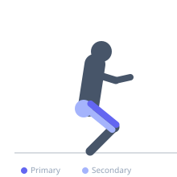
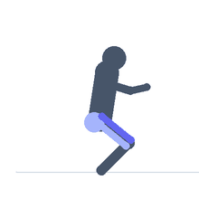

Exercise guide / V-Squat Machine
V-Squat Machine
The V-squat machine guides the lifter along a fixed V-shaped arc, placing the load on shoulder pads while the feet remain on the floor or a low platform in front of the body. The angled path of the machine produces a movement pattern that is deeper than a standard hack squat machine while keeping the spine supported. It is a popular alternative to the squat and leg press for lifters who want significant quad loading with reduced spinal loading.
Primary muscles
rectus femoris
vastus lateralis
vastus medialis
Secondary muscles
gluteus maximus
adductor magnus
Stabilizers
gastrocnemius medial
Equipment
Gymnastic Rings


Starting position
- Step into the machine, positioning the shoulder pads on your shoulders. Feet on the platform, hip-width apart. Stand upright with the machine unlatched.
Setup
- Adjust shoulder pads to fit comfortably. Set foot position on the platform to target quad emphasis (higher = more glute) or quad (lower feet).
Steps
- Step 1: Unlatch the machine and control the descent by bending the knees along the guided arc.
- Step 2: Descend until the thighs reach at least parallel to the floor or deeper if flexibility allows.
- Step 3: Drive through the heels and quads to press upward along the arc to the starting position.
- Step 4: Lock out at the top without hyperextending the knees.
Coaching cues
- Knees track over toes
- Heels stay flat
- Full depth — don't stop at parallel
Breathing
- Inhale on descent, exhale on ascent.
Range of motion
- Thighs to at least parallel; full depth preferred if mobility allows.
Tempo
- 2-0-2-0
Common mistakes
- Knees caving inward
- Rising onto the toes
- Not reaching sufficient depth
Safety
- Engage the safety latches before stepping in or out of the machine
Training
- strength: 5–10 reps
- hypertrophy: 10–20 reps
- strength: 3–5 sets
- hypertrophy: 3–4 sets
- Rest: {'strength': 180, 'hypertrophy': 90}